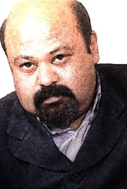

PK is as much a philosophy as a film. It takes the 'stranded alien' theme, familiar from classics like ET, but tells the tale equally from the lonely alien's eyes - at times, evoking the beautiful story The Little Prince - as from his human narrator's. Starting with the alien's desperation, PK captures the fears and falsehoods humans weave around faith. When PK decides to pray for his remote, he's bewildered about whom to and how to pray. PK features brave scenes - money extracted at temples, coconuts offered in confusion at a church, god-men doling out tortuous advice - and strong lines, including a Muslim girl bravely asserting, "Itna chota nahin ho sakta hamara khuda, ki use hamare school jaane pe aitraaz ho." Capturing faith whipped into hate, PK's sterling message, directed sensitively, stands out.
Amir Khan As P.K.
Anushka As Jagat Janani
Sanjay Dutt As Bhairon
Boman Irani As Cherry

Saurabh As Tapasvi
Ratings:- ★★★★★★★★★★
Watched PK! It's by far the best film I have ever seen in my life. Aamir has given performance of his life.Best film of Rajkumar Hirani and Aamir Khan's career. This film is once in a lifetime experience. This film is made with a lot of hard work which can be seen clearly.Aamir is a legend. Anushka has done wonderful work too. Sushant is brilliant in a small role..Also great act by Saurabh Shukla. each and everyone has done their work brilliantly..this film is father of 3idiots.This is a must watch film. message is very strong. this film makes u cry , laugh and force u to think. this is a brilliant film. once in a lifetime experience. I am going with full 10/10 with this film.
Ratings:- ★★★★★★★★★★
PK is the biggest achievement of Aamir Khan's carrier and Raju Hiranis too. Aamir acting and expressions deserve an Oscar. The film has everything. Emotion, Drama, Comedy, Message which literally means perfection. PK was the toughest character for not just Aamir Khan but, for anyone in the Bollywood industry. Not only Aamir, but Anushka Sharma and Sanjay Dutt did a very good job of their character which I think no one could have done. Sushant Rajput also did a fine job of his character.Like everything in this film is perfect. I insist you to go and enjoy the film because it's like a word of mouth movie. PK is like a father of 3 idiots.
Ratings:- ★★★★★★★★☆☆
Watched PK! It's by far the best film I have ever seen in my life. Aamir has given performance of his life.Best film of Rajkumar Hirani and Aamir Khan's career. This film is once in a lifetime experience. This film is made with a lot of hard work which can be seen clearly.Aamir is a legend. Anushka has done wonderful work too. Sushant is brilliant in a small role..Also great act by Saurabh Shukla. each and everyone has done their work brilliantly..this film is father of 3idiots.This is a must watch film. message is very strong. this film makes u cry , laugh and force u to think. this is a brilliant film. once in a lifetime experience. I am going with full 10/10 with this film.